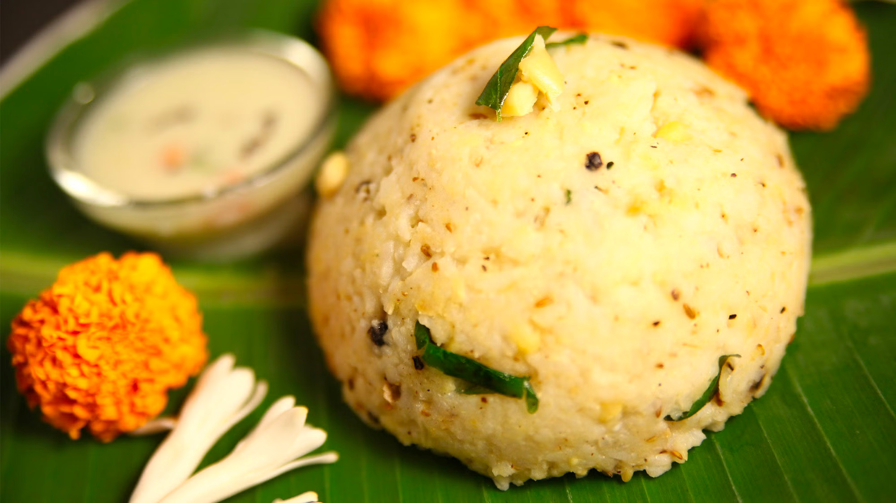
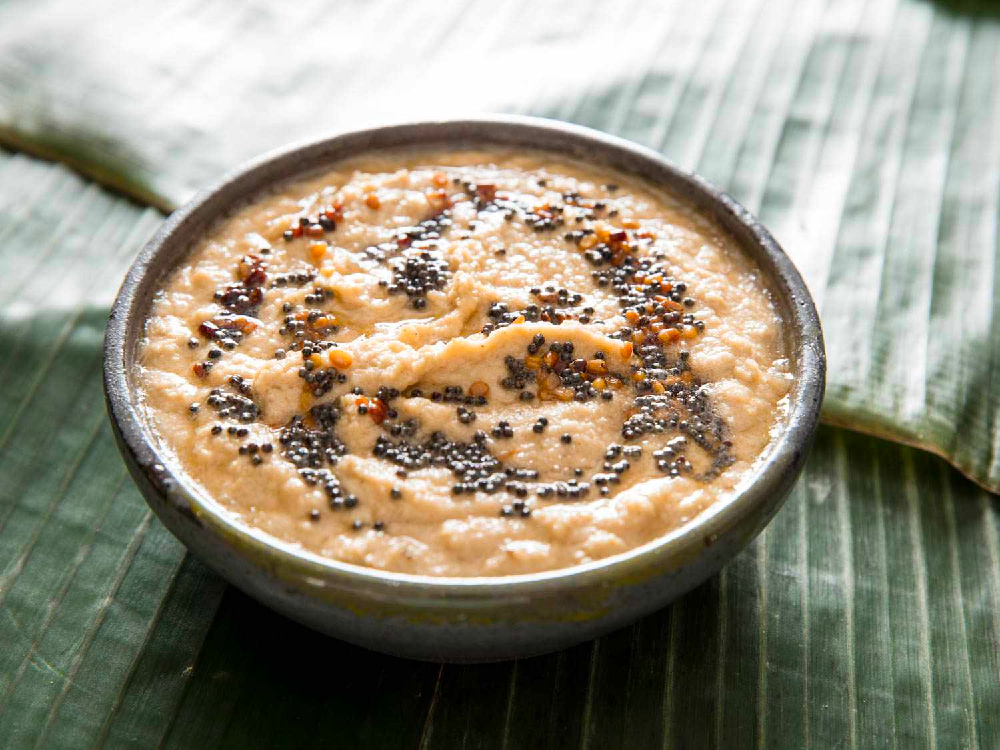

Step 1-Heat vegetable oil in a pan over medium-low heat.
Step 2-Add mustard seeds, cumin seeds, and chana dal and saute for a few seconds.
Step 3-Add curry leaves, dried red chile, cashews, ginger, green chile peppers, and hing and saute until cashew nuts turn slightly brown, 3 to 4 minutes.
Step 4-Add semolina and cook and stir over low heat until slightly browned; remove mixture to a plate and let cool completely, about 10 minutes.
Step 5-Add yogurt and carrot to the mixture and mix well.
Step 6-Add water as needed to reach the desired consistency.
Step 7-Season with salt to taste.
Step 8-Cover and let sit for 15 minutes.
Step 9-Check batter consistency again; add more water if needed.
Step 10-Grease an idli pan and add water to steam; bring to a boil.
Step 11-Meanwhile, add fruit salt to the batter, mix well, and then pour the batter into the greased molds.
Step 12-Steam the idli for 10 minutes.
Step 13-Remove the idli from the molds and serve.
2. Ven Pongal

Ingredients
1 cup white rice
1 cup yellow lentils (moong dal)
3 tablespoons ghee (clarified butter), divided
Salt to taste
4 cups water, or as desired
1 ½ teaspoons coarsely ground black pepper
¼ teaspoon cumin seeds
5 curry leaves
(Optional) 1-inch piece fresh ginger root, minced
(Optional) ¼ cup cashews
Directions
Heat a large skillet over medium heat; add rice and lentils. Cook and stir until toasted and fragrant, 3 to 4 minutes. Rinse.
Place the rice-lentil mixture, 1 tablespoon ghee, and salt in a rice cooker or pressure cooker; add water. Cook according to the manufacturer's instructions until rice and lentils are tender and the consistency of a paste, 20 to 25 minutes. Stir and mash into a fine paste.
Heat 1 tablespoon ghee in a skillet over medium-high heat. Add black pepper and cumin seeds; cook until seeds start to pop, 2 to 3 minutes. Stir the cumin mixture into the rice-lentil mixture.
Tear curry leaves roughly and stir into the rice-lentil mixture; stir in ginger. Season with salt.
Heat the remaining 1 tablespoon ghee in a skillet over medium-high heat; cook and stir cashews until toasted and fragrant, 2 to 4 minutes. Garnish the rice-lentil mixture with toasted cashews.
3. Coconut chutney

Ingredients
½ fresh whole coconut, drained and grated
½ cup plain yogurt
1 tablespoon vegetable oil
3 fresh red chili peppers, chopped
½ teaspoon mustard seed
¼ teaspoon cumin seeds
Directions
Step 1-Place the coconut and yogurt in a blender or food processor. Process to a paste-like consistency. Transfer to a medium bowl.
Step 2-Heat the oil in a medium saucepan over medium heat. Stir in chili peppers, mustard seed, and cumin seeds. Cook until mustard seeds start to pop.
Step 3-Spoon over the coconut mixture. Cover, and refrigerate until serving.